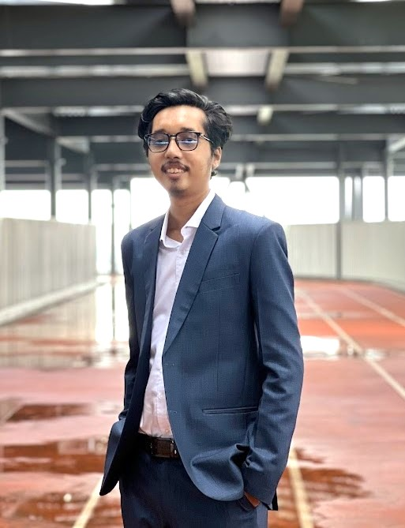

I completed my undergraduate degree in Computer Science & Engineering at BRAC University, where I also served as a Student Tutor (ST) for undergraduate students in the Discrete Mathematics course. I bring a rigorous technical foundation and a strong enthusiasm for research across AI systems, intelligent architectures, and interdisciplinary computing driven to engineer robust computational solutions that tackle complex, real-world challenges.

BSc in Computer Science and Engineering — CGPA 3.83 / 4.00
Higher Secondary Certificate (HSC) — GPA 5.00 / 5.00
Secondary School Certificate (SSC) — GPA 5.00 / 5.00
Autonomous classification, calibrated risk prediction, and interpretable reasoning over live endoscopic video — combining real-time detection, segmentation, and consensus-based logic for colorectal cancer screening. 2025 – 2026.
Live endoscopic feed ingested frame-by-frame for real-time analysis.
Real-time polyp detection using dual detector consensus.
Pixel-level lesion segmentation for precise boundary extraction.
Consensus-based reasoning delivers interpretable, calibrated diagnostic output.
Appointed by the Department of Computer Science and Engineering, BRAC University for two consecutive terms (Spring 2026 & Summer 2026).
Cross-disciplinary interests spanning perception, reasoning, and the systems that make both run at scale.
Six shipped systems spanning language design, real-time collaboration, deep learning, and low-level systems programming.
Open to research collaborations, graduate opportunities, and engineering roles.